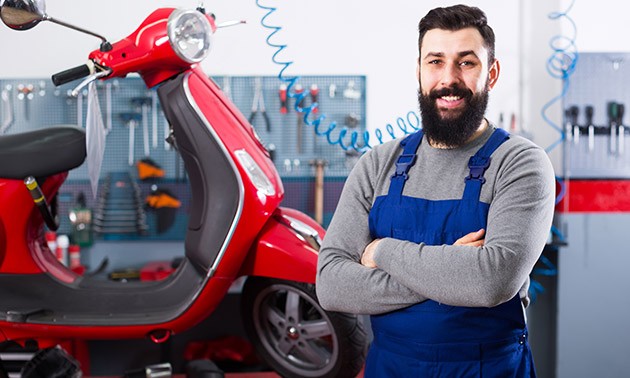

Scooter onderhoud & prijzen

Basis onderhoud
| Onderdeel | Prijs (€) |
|---|
| Olie verversen | 30 - 50 |
| Bougie vervangen | 15 - 25 |
| Luchtfilter vervangen | 20 - 35 |
| Bandenspanning / controle | 10 - 15 |
| Accu opladen / controleren | 15 - 30 |
| Remmen afstellen | 20 - 35 |
| Remblokken vervangen | 40 - 70 |
Periodiek onderhoud
| Onderdeel | Prijs (€) |
|---|
| V-snaar vervangen | 70 - 120 |
| Variateur rollen vervangen | 50 - 90 |
| Kleppen afstellen (4-takt) | 60 - 100 |
| Carburateur reinigen | 50 - 80 |
| Injectiesysteem check | 60 - 90 |
| Koelvloeistof vervangen | 40 - 60 |
| Zekeringen vervangen | 10 - 20 |
Groot onderhoud
| Onderdeel | Prijs (€) |
|---|
| Jaarlijkse grote beurt | 150 - 250 |
| Compressietest motor | 40 - 60 |
| Volledige carburateur/injectie service | 100 - 160 |
| Wiel- en balhoofdlagers vervangen | 120 - 180 |
| Schokbrekers vervangen (set) | 150 - 250 |
Extra’s / comfort
| Onderdeel | Prijs (€) |
|---|
| Nieuwe banden (per stuk, incl. montage) | 70 - 120 |
| Zadelherstel / slot smeren | 25 - 50 |
| Kappen nakijken / vervangen | 100 - 200 |
| Scooter poetsen & waxen | 30 - 60 |
⚠️ Dit zijn gemiddelde richtprijzen. Prijzen verschillen per merk, model en garage.
← Terug naar Home